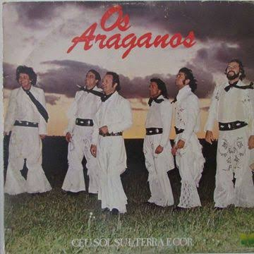

Eu quero andar nas coxilhas
Sentindo as flexilhas das ervas do chão
Ter os pés roseteados de campo
Ficar mais trigueiro com o Sol de verão
Fazer versos cantando as belezas
Desta natureza sem par
E mostrar para quem quiser ver
Um lugar para viver sem chorar
(E mostrar para quem quiser ver)
(Um lugar pra viver sem chorar)
É o meu Rio Grande do Sul
Céu, Sol, Sul, terra e cor
Onde tudo o que se planta cresce
E o que mais floresce é o amor
É o meu Rio Grande do Sul
Céu, Sol, Sul, terra e cor
Onde tudo o que se planta cresce
E o que mais floresce é o amor
(Onde tudo o que se planta cresce)
(E o que mais floresce é o amor)
Eu quero me banhar nas fontes
E olhar horizontes com Deus
E sentir que as cantigas nativas
Continuam vivas para os filhos meus
Ver os campos florindo
E crianças sorrindo, felizes a cantar
E mostrar para quem quiser ver
Um lugar pra viver sem chorar
(E mostrar para quem quiser ver)
(Um lugar pra viver sem chorar)
É o meu Rio Grande do Sul
Céu, Sol, Sul, terra e cor
Onde tudo o que se planta cresce
E o que mais floresce é o amor
É o meu Rio Grande do Sul
Céu, Sol, Sul, terra e cor
Onde tudo o que se planta cresce
E o que mais floresce é o amor
(Onde tudo o que se planta cresce)
(E o que mais floresce é o amor)
